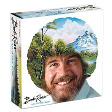

Fenomenāls cilvēks, kas iedvesmojis vairākas paaudzes uz radīšanas procesa prieku

Šis cilvēks ir paraugs man
Atbalstu Boba Rosa ideju
Paveikto darbu saraksts
TV show "The Magic of Oil Painting"
TV show "The Joy of Painting"
Boba Rosa otrā dzīve
References to him have been included in television shows including Family Guy
Google celebrated the 70th anniversary of his birth with a Google Doodle on October 29, 2012
n 2015, Bob Ross was included in a commercial for HGTV Sherwin-Williams paint along with Leonardo da Vinci, Andy Warhol, Michelangelo and Vincent van Gogh
In May 2017, Ross' likeness was added as a skin for Sylvanus in the MOBA video game Smite